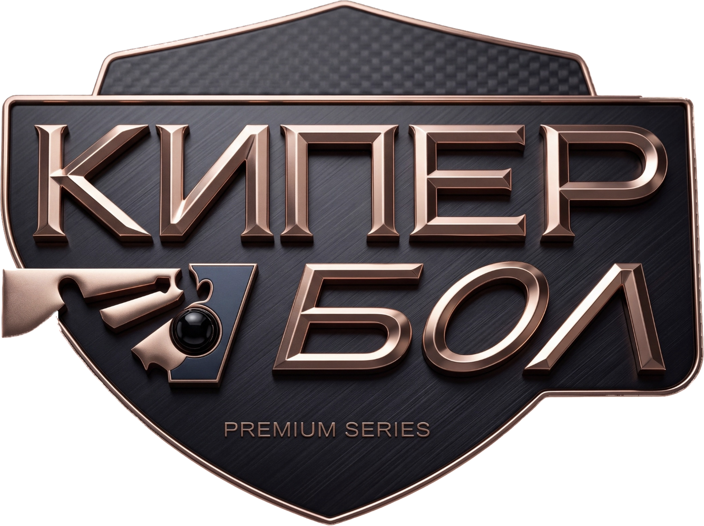
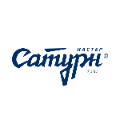
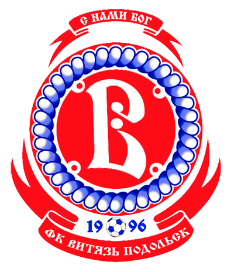

Презентация для клубов
Что даёт клубу Кубок Открытой Лиги Кипербола
Турнир 2027 для молодёжных команд.
- Российский этап
- март–ноябрь 2027
- Гран-при
- июнь 2027
Организатор — Фонд «Страна Футбола» Игоря Акинфеева

Что такое кипербол
Ваши вратари выходят в центр игры
Кипербол (KeeperBall) — новый формат футбола, разработанный Фондом «Страна Футбола» Игоря Акинфеева. Вратарь здесь не только последняя линия обороны, а ключевой герой каждого матча.
- Матч построен вокруг вратарского мастерства
- Высокая плотность событий и несколько пиковых моментов в одной игре
- Преемственность традиций отечественной вратарской школы и поиск новых талантов

Формат матча
Два тайма, три очка: каждая часть матча работает на результат
- 1-й тайм
Кипербатл
Битва вратарей: 2×2, площадка 22 × 26 м, 6 минут. Победа — 1 очко.
- 2-й тайм
Футбольный матч
10×10, 40 минут, без ограничения замен. Победа — 2 очка.
- Финал матча
Серия пенальти
По 7 ударов, первыми бьют вратари. Победитель серии — победитель матча.
Возможное распределение очков — 3:0 или 2:1. В плей-офф за кипербатл вместо очка команда получает фору в один гол.

Почему это нужно клубу
Пять причин выйти на турнирное поле
- 1
Игровая практика
Дополнительные матчи для молодых игроков.
- 2
Шанс заявить о себе
Дополнительные возможности для молодых игроков.
- 3
Внимание к молодёжному футболу
Популяризация молодёжного футбола и молодёжного чемпионата России. Турнир будет широко освещаться в СМИ, трансляции будет вести Первый канал.
- 4
Международные матчи
Возможность сыграть на международном этапе.
- 5
Материальный стимул
По итогам турнира распределяется призовой фонд.

Участники 2027
Вы играете среди молодёжных команд профессиональных клубов
8 команд Москвы и Московской области — участники молодёжного чемпионата России (группы А и Б).
 ЦСКА
ЦСКА Спартак
Спартак Локомотив
Локомотив Динамо
Динамо Родина
Родина Чертаново
Чертаново
Мастер-Сатурн
Витязь

Российский этап · 2027
Играете рядом с домом, между турами молодёжного чемпионата
- Март–ноябрьИгры проходят еженедельно, ориентировочно по вторникам — между турами молодёжного чемпионата России
- Привычные ареныМатчи — на тех же аренах, где команды играют календарные игры чемпионата (как исключение — на тренировочных аренах)
- Два кругаДома и в гостях. По итогам двух кругов определяются 4 финалиста

Финал российского этапа
Финал — в Академии А35 Игоря Акинфеева
Финал с участием 4 команд проводится в конце мая — начале июня (как вариант — в день розыгрыша Кубка России по футболу).
- Место — Академия футбола и вратарского мастерства Игоря Акинфеева (Академия А35), г. Реутов Московской области
- Победитель российского этапа награждается Кубком Открытой Лиги Кипербола (Россия)
Международный этап · Гран-при
Финалисты выходят на международный уровень
Июнь 2027 — после окончания молодёжного чемпионата России и финала российского этапа (даты согласуются дополнительно).
- Играют финалисты российского этапа (1–2 места)
- 2–4 зарубежные молодёжные команды — по приглашению организаторов, из числа победителей и призёров молодёжных первенств своих стран (страны СНГ и дружественные России страны)
- Место — Академия А35, г. Реутов Московской области

Освещение и Первый канал
Ваших игроков увидят: турнир будет широко освещаться, трансляции будет вести Первый канал
- Репортажи на федеральных каналах: 1 канал, Россия 24, Матч ТВ
- Трансляции и публикации на ведущих новостных и спортивных порталах и в социальных сетях
- Главным информационным партнёром турнира будет Первый канал
Награды
Кубок для победителя и призовой фонд по итогам турнира
Кубок Открытой Лиги Кипербола (Россия)
Награда команде — победителю российского этапа.
Главный приз — Гран-при
Кубок Открытой Лиги Кипербола (Гран При) — команде, победившей на международном этапе.
По итогам турнира распределяется призовой фонд.

Цифровые технологии
Матчи с live-метриками: игровые навыки видны в цифрах
Планируется измерять игровые навыки в реальном времени — через фитнес-браслеты, биометрию, видеозрение и другие инструменты, с использованием ИИ и дополненной реальности.
- Скорость игроков и мяча
- Частота пульса
- Сила и точность удара
- Дистанция перемещения мяча
- Реакция вратаря
- и другие показатели
Аналитикой займётся разрабатываемая нейроплатформа для вратарей «А35».
Следующий шаг
Свяжитесь с организаторами и присоединяйтесь к турниру 2027
Фонд «Страна Футбола» · Кубок Открытой Лиги Кипербола
- Почта
- [ПОЧТА — впиши]
- Телефон
- [ТЕЛЕФОН — впиши]
- Соцсети
- [ТЕЛЕГРАМ/ВК — впиши]
1 / 12
Скачать PDF